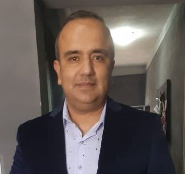

Curriculo Vitae
Cristian Britos:
Me gusta leer de tecnología, aprender y poder implementar proyectos informaticos. Y por sobre todo continuar buscando desafios.
Educacion:
- Tecnico Universitario Operador de Sistemas
- Licenciado en Analisis de Sistemas
- Maestria en Informatica (Sin Finalizar)
Experinecias Laborales:
- Administrativo
- Auditoria Medica
- Administrador de Sistemas
Skills
- Analisis y Diseño de Sistemas
- Metodologia RUP con UML
- C++, C# basico

Desde antes de iniciar mis estudios universitarios me apasionaba la programación, por distintos motivos mi trabajo siempre estuvo en otras ramas de la informatica pero estoy convencido que dedicarme tiempo completo al desarrollo de software es lo que quiero para mi futuro.